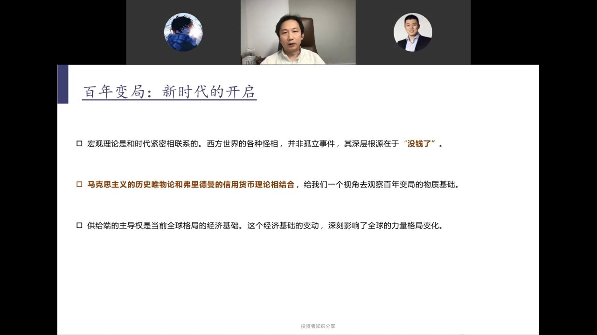
宏观理论始终与时代紧密联系。亚当·斯密《国富论》对应资本主义兴起，李嘉图比较优势对应全球贸易扩张，凯恩斯对应大萧条后的需求管理，弗里德曼货币理论对应布雷顿森林体系瓦解后的信用货币时代。每一块理论基石都产生于特定的历史条件。
这些年西方出现的两党撕裂、盟友欺凌、日本凋谢、对中国"斩杀线"的强烈反应——所有"前所未有"的深层根源，在于整个西方没钱了。而没钱的根本原因，是全球供应链主导权的转移。
马克思历史唯物论 + 弗里德曼信用货币理论，构成观察百年变局物质基础的双重视角。供给端主导权是当前全球格局的经济基础。
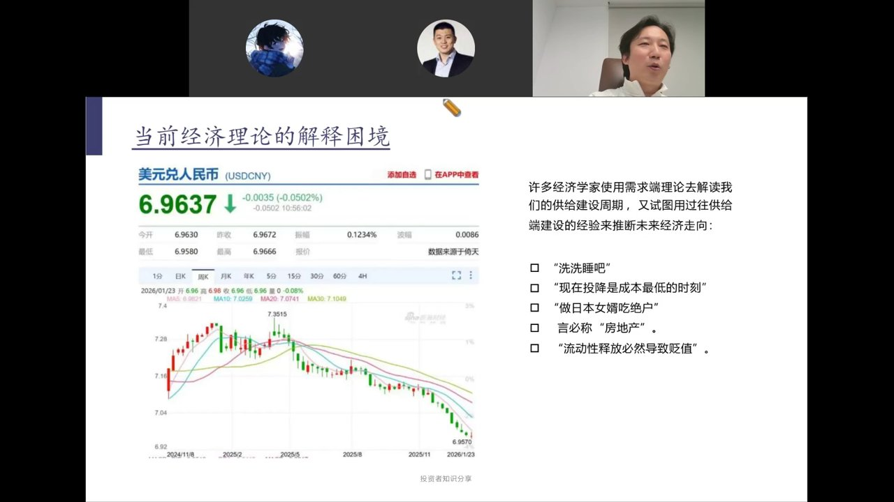
许多经济学家用需求端理论（凯恩斯、弗里德曼）去解读中国的供给建设周期，又试图用过往供给端建设的经验来推断未来经济走向，结果出现大量荒谬论断：
现实是：利率一路降，汇率一路涨。每次利率下行都引发汇率上行。人民币升值5%以上，利率大幅下行——所有担忧都被现实证伪。问题不在于理论本身，而在于用错了时代的理论。
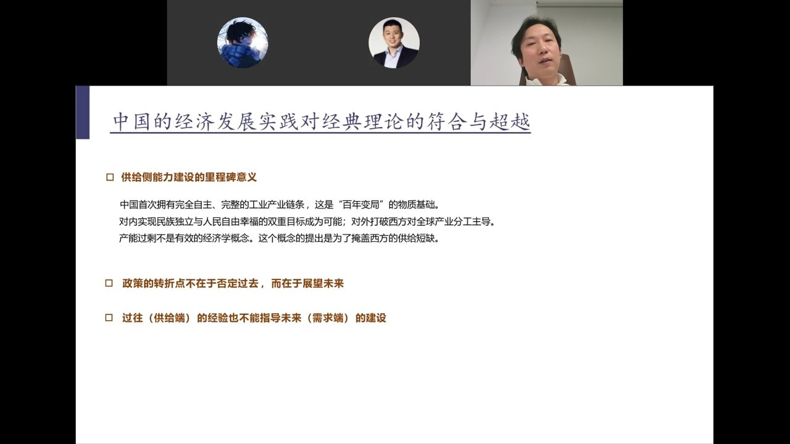
中国首次拥有完全自主、完整的工业产业链条。对内，使民族独立与人民自由幸福的双重目标成为可能（人民英雄纪念碑碑文所寄托的百年期待）；对外，打破西方对全球产业分工的主导。
"产能过剩"不是有效经济学概念。准确说法是"供给过剩"——西方故意用"产能过剩"规避供需关系，要求中国自废武功。供给过剩的解决方案是提振需求，而非削减供给。
2024年1月，潘功胜行长提出"把推动价格温和回升作为把握货币政策的重要考量"——这是人民银行有史以来第一次从"控制价格上行"转向"推动价格回升"，是一个趋势性的政策转向。而政策叙事的精妙之处在于：不是否定过去的供给端建设，而是肯定建设成就之后，自然需要需求端政策来适配。
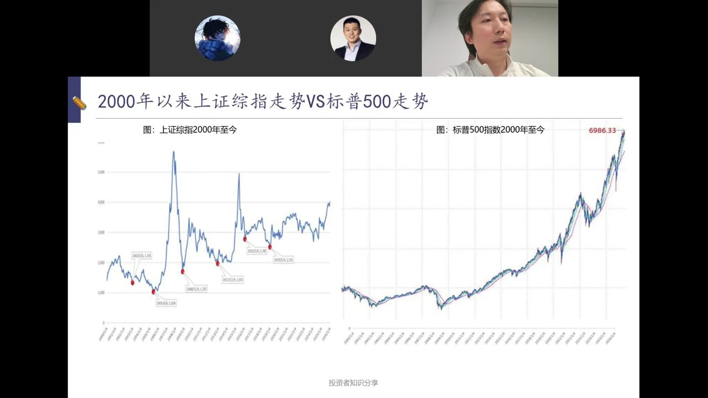
2000年以来涨了三四倍，尤其是2008年后美元流动性趋势性释放，市场趋势性上行。因为供应链主导权在美国手中，美国具备趋势性持续发行货币的能力。
红点标注的周期顶点间隔约3-4年——这正是基钦周期（存货/货币周期）。货币释放→通胀→收紧→下跌，循环往复。因为供应链不完整时，货币发行是周期性的，而非趋势性的。
未来10-20年，这个图可能会倒过来：中国获得趋势性货币发行能力（人民币永远能买到东西），走出趋势性上行；美国则可能走向周期性波动。确认趋势需要等突破前高，但那时机会已失——必须在转折点确立之前找到底层逻辑。
斯大林格勒投降时无人预见攻克柏林；林彪南下锦州时无人预见一年后建国；1989年无人预见苏联两年内解体。转折点要在底层逻辑上找，不要在K线图上找。
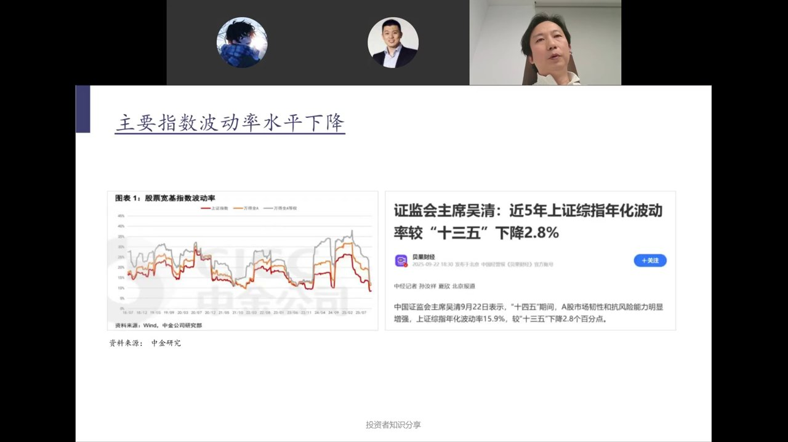
2024年下半年以来，波动率快速下行，且与指数上行同步发生——这是非常罕见的现象。通常指数上行时伴随波动率上升（如2015年年化波动率49%）。
2024年10月讨论国家队/平准基金时，陈鹏建议：以波动率为工作目标，不要以点位为目标。情绪高涨时卖出，恐惧时买入——既不承担守点位的不可承受之责，最后算下来还赚钱。2025年9月吴清主席公开讲波动率，这是证监会领导首次，大概率将成为KPI。
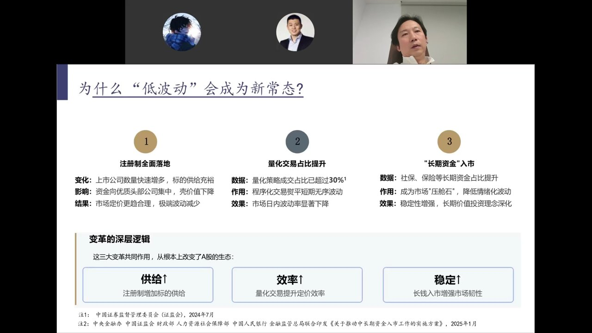
深层逻辑：供给↑（注册制增加标的）、效率↑（量化提升定价效率）、稳定↑（长钱增强韧性）。国家队在情绪偏狂热时必出手，低波动+高风险偏好的组合将成为新常态。
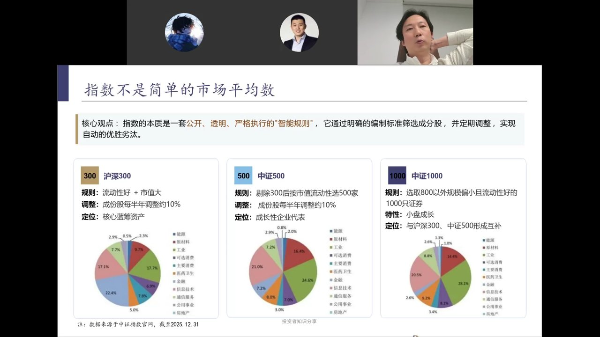
指数的本质是一套公开、透明、严格执行的"智能规则"，通过编制标准筛选成分股并定期调整，实现自动优胜劣汰。沪深300表现不好的退入中证500，中证500退入中证1000，中证1000退入中证2000，层层递进。
过去热点跟着美国走（AI、新能源、机器人），因为流动性中心在美元，美国人定主题。当流动性中心从美元转向人民币，主题将由中国定义——中国有优势的是制造业，未来制造业将被重估。
今年炒航天、航空工业已非"跟马斯克走"——中国商业航天全链条市值可能已超SpaceX上市后水平。我们在借美国热点兑现自己的供应能力。中证500代表制造业中坚，是当前更好的配置标的。
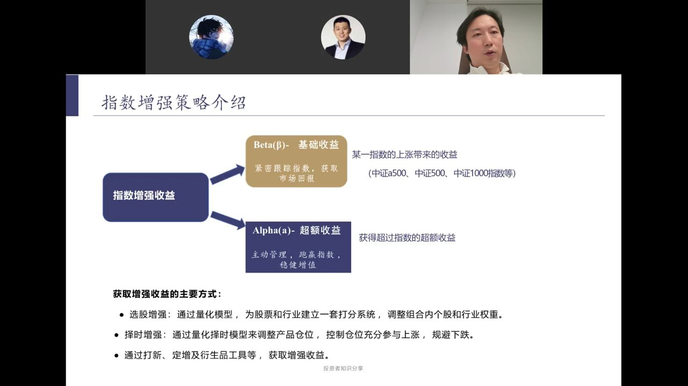
指数增强收益 = Beta（紧密跟踪指数的市场回报）+ Alpha（主动管理的超额收益）。
在央行趋势性发钱时，普通人不需要琢磨游资在想什么、怎么从对手盘口里夺食——而是应该"端个盆"把央行放出来的钱接住。指数投资就是最好的盆。
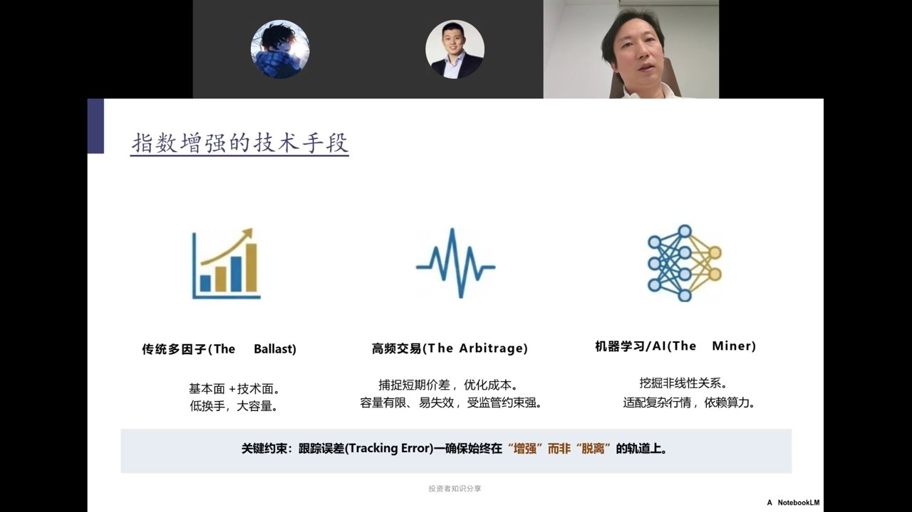
关键约束：跟踪误差（Tracking Error）——确保始终在"增强"而非"脱离"的轨道上。头部私募量化过去5年滚动一年超额胜率基本为正，年化超额约13%。
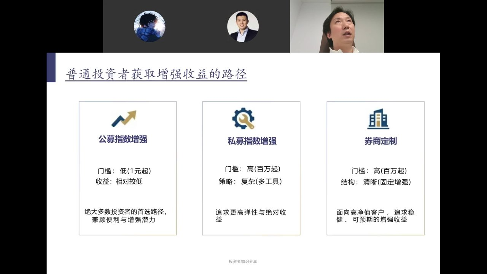
公募的硬伤：量化产品一天可能买卖上千只股票，其他几十个产品的交易无法进行（禁止内部反向交易），因此只能周频调仓，收益率天然吃亏。私募无此限制。
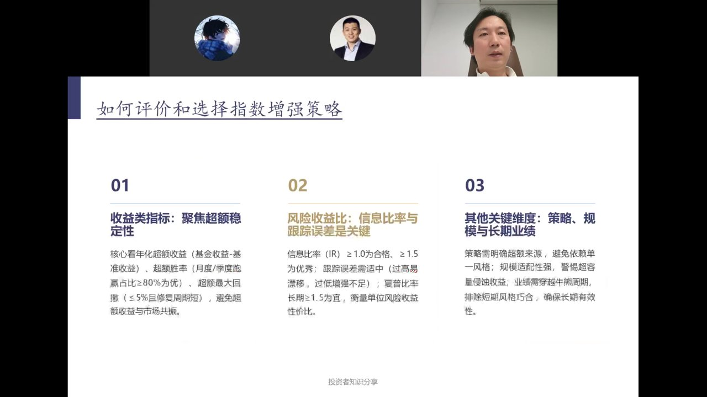
问答环节要点：外部事件（贸易战、地缘冲突）对A股若造成剧烈冲击，就是"黄金坑"——正如2025年4月7日暴跌即全年低点。中国供应链完整带来政策独立性，做好自己的事就足够。结尾祝大家"潮平两岸阔，风正一帆悬"。